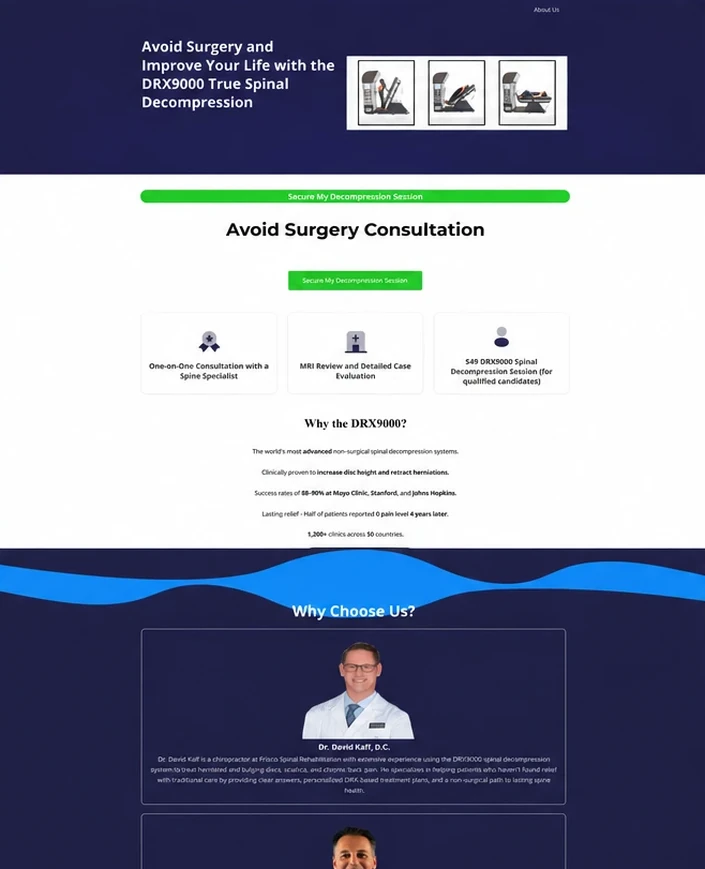
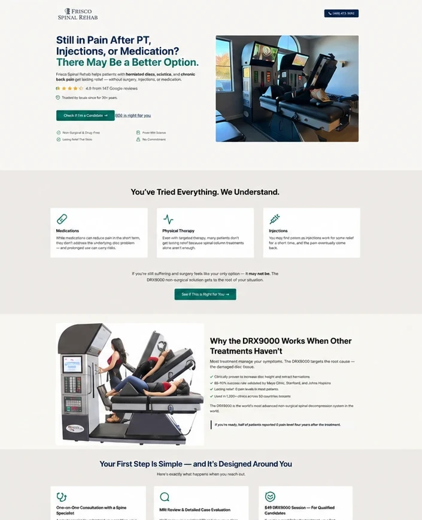

Turning a treatment-first funnel into a patient-first conversion journey.
Frisco Spinal Rehab was sending high-intent Google Ads traffic to a spinal decompression funnel. We audited the landing and scheduling experience, then rebuilt it around patient concerns, credible proof, a consistent offer and a clearer path to submitting the form.


High-intent patients needed reassurance before being asked to act.
The ads targeted people searching for spinal decompression, herniated discs, sciatica, pinched nerves, stenosis, persistent back or arm pain and failed back surgery.
Many visitors had already tried physical therapy, injections or medication. The funnel needed to acknowledge that frustration, establish credibility and make the next step feel clear and reassuring.
Where the funnel was losing momentum.
Treatment before the patient
The headline led with the DRX9000 machine before connecting with what the patient was experiencing.
Missing trust signals
The clinic's 5-star reputation and 400+ patient reviews were not visible on the paid-traffic page.
Conflicting offer language
“$49 Session” and “Secure My Free Session” appeared in the same journey.
Misplaced urgency
The scarcity message appeared while visitors were still looking for information.
Abrupt scheduling handoff
Visitors moved from the landing page to a bare calendar without sufficient context or reassurance.
Uncertain confirmation language
“This is not a confirmed appointment” introduced doubt at the moment of commitment.
Align the ad, the patient's concern and one clear next step.
- 1
Lead with the patient's pain, concerns and previous attempts, not the machine.
- 2
Match the page message with high-intent Google searches.
- 3
Bring review proof closer to the headline, form and scheduling decision.
- 4
Use one consistent offer and CTA throughout the funnel.
- 5
Explain what happens during the consultation and what happens after submission.
- 6
Keep the form or calendar within the persuasive context of the landing page.
- 7
Install MS Clarity to support ongoing behavior-based optimization.
- Google search intent
- Patient-first message
- Relevant proof
- Consistent offer
- What-to-expect reassurance
- Form submission
- Clear confirmation
From machine-first messaging to a more reassuring patient journey.
- Treatment-led headline
- Missing review proof
- Conflicting free and paid offers
- Calendar separated from the persuasive page
- Uncertain confirmation language
- Template-like presentation
- Patient-first, search-aligned messaging
- Trust proof near decision points
- One consistent offer
- Clear expectations before submission
- More reassuring next-step language
- Polished healthcare presentation
- MS Clarity tracking installed
A major page upgrade, and a funnel ready to learn.
The completed page created a clearer, more professional experience for people making a serious healthcare decision. It aligned the campaign message with patient intent, strengthened trust around the form journey and established the tracking foundation needed for continued optimization.
The landing page he built for us has been a major upgrade, and he went above and beyond integrating MS Clarity for tracking and optimization. Nothing but positive things to say.
This case study documents the strategy, redesign and client-verified delivery. No numerical conversion lift is presented because a controlled pre/post dataset was not available.

Landing Page Sprints
Campaign landing pages planned, written, designed, and built around one clear action — on the platform you already use.
Let's find where your funnel is losing momentum.
Send us your landing page and ad message. We'll identify the highest-impact opportunities across positioning, proof, offer clarity and conversion flow.
No ObligationResponse within 1 day
conversion strategist